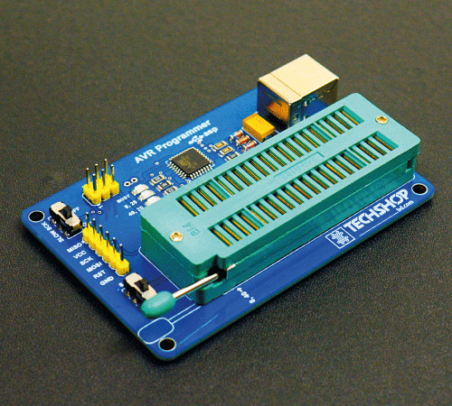
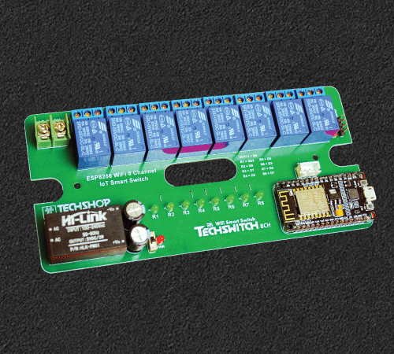

PCB Design Portfolio
A curated showcase of custom hardware, multi-layer PCB layouts, and embedded systems engineered for reliability and performance.

AVR Programmer ZIF
The AVR Programmer is a USB-powered ATmega8 board designed to read and write firmware as well as fuse bits. It features a ZIF socket for effortless insertion and removal of DIP-28 MCUs alongside an ISP header for external programming. The layout integrates USB over-current protection, status LEDs for power, busy, and error states, and optimized trace widths for signal stability.
AVR Trainer Kit Pro
A comprehensive educational development board built around the ATmega32 microcontroller for university labs and embedded learners. It integrates essential peripherals including a 16x2 LCD, multiplexed 7-segment displays, matrix keypad, ADC inputs, a DS18B20 temperature sensor, and dedicated slots for ESP8266 and HC-05 modules with a generous prototyping area.


ESP8266 8-Channel Smart Switch
An industrial-grade IoT automation board powered by the ESP-12E module, engineered to control up to eight high-power AC loads. The PCB incorporates full optocoupler isolation between low-voltage control logic and high-voltage relay switching, paired with an onboard Hi-Link AC-DC power supply and individual channel status indicators.